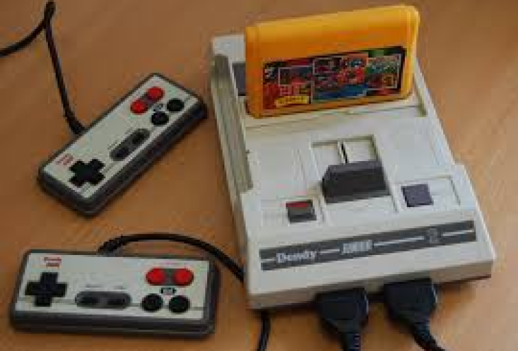
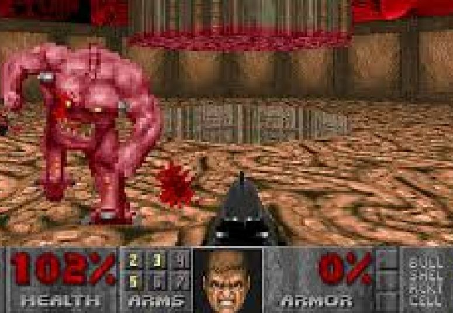
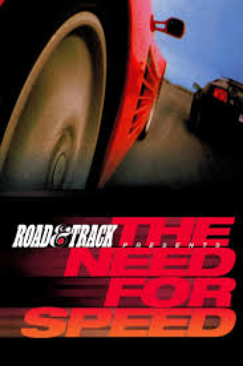
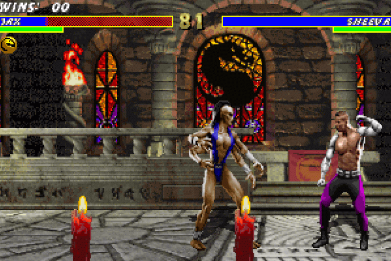
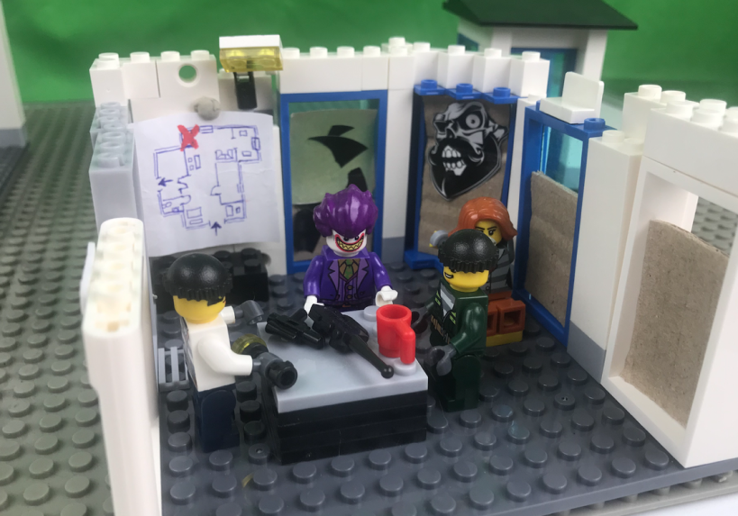
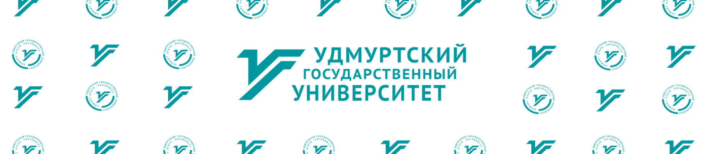

У меня была Денди из 90-х, а на старом компьютере была установлена единственная программа - эмулятор игр под MS DOS. Тогда у меня не было возможности играть во что то современное, а также не было нормального доступа в интернет, поэтому я часами коротал вечера, играя в Mortal Kombat 3, первый Doom и Need For Speed 94 года





С самого детства меня интересовало такое направление, как информатика. Мне было интересно как устроены компьютеры, компьютерные программы, а в особенности игры
Параллельно с этим, точно также, как мне нравились игры мне нравились и мультфильмы, мне нравился процесс создания анимации, магия кадров, совокупность которых порождает великолепные истории. Помню, как пытался делать мультики из лего и пластилина, снимая кадры ещё на простенький кнопочный телефон
Эти проекты очаровывали меня, я углублялся в историю разработки этих проектов, я очень сильно вдохновлялся ими. Я всегда мечтал и по сей день мечтаю делать свои игры и даже пробовал себя в этом, делая простенькие проекты на несложных движках
Всё это было очень интересно для меня и я искал способы объединения моих увлечений. Как и всем мне нравится очень и очень многое, но я решил, что поступление в УдГУ на Прикладную информатику в дизайне - это хорошее решение, чтобы прокачать свои навыки в программировании, научиться работать в сложных программах и получить базу знаний по дизайну. Я считаю, что это направление позволит объеденить мои интересы и подталкнет меня на пути к моей мечте - стать кем-то похожим на геймдизайнера или на профессию связанную с игровой индустрией или анимацией

А может быть я оставлю это как хобби и буду заниматься чем-то другим, но всё равно связанным с творчеством и информатикой, например оформлять сайты)))